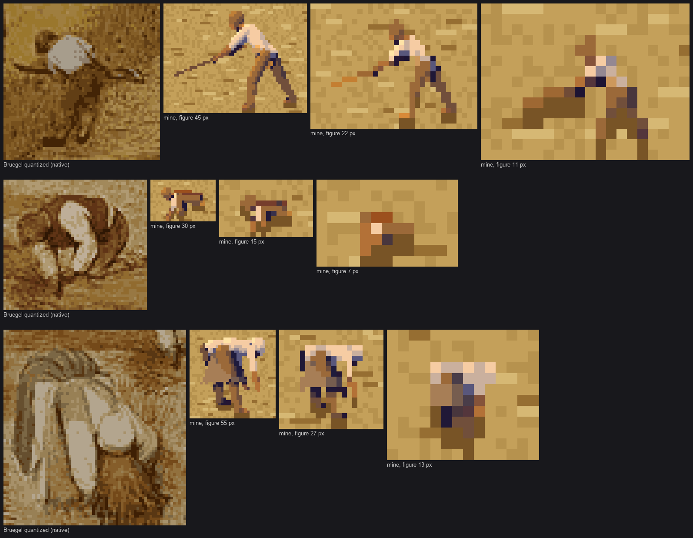
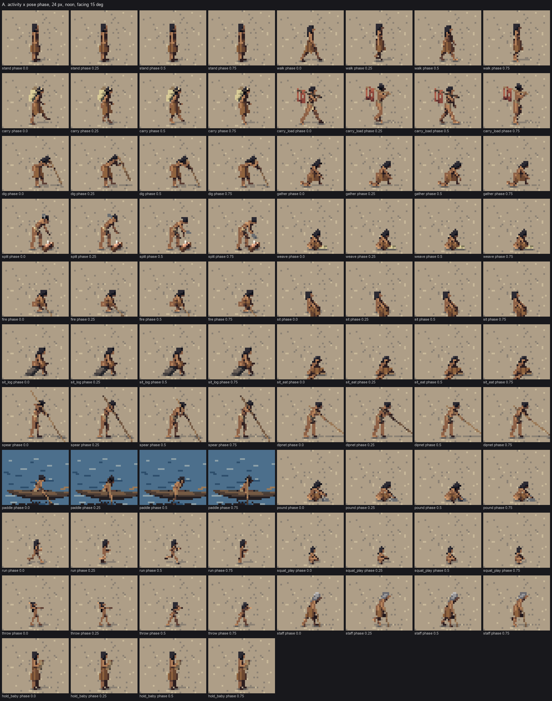
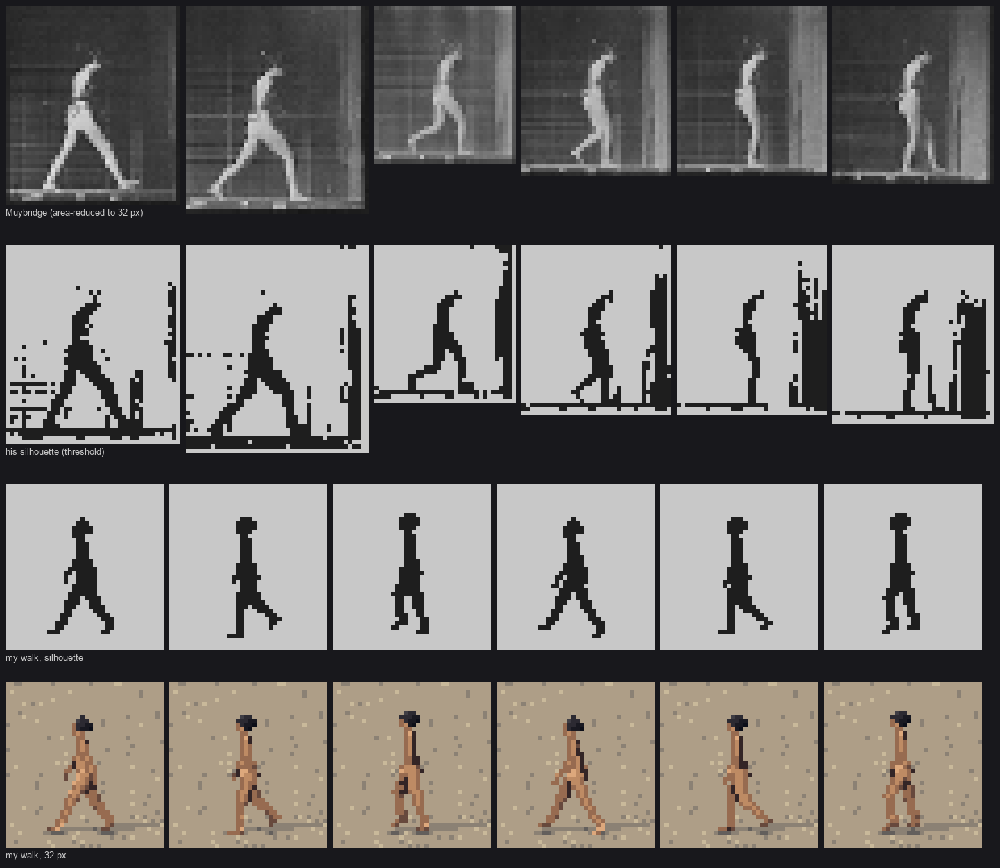
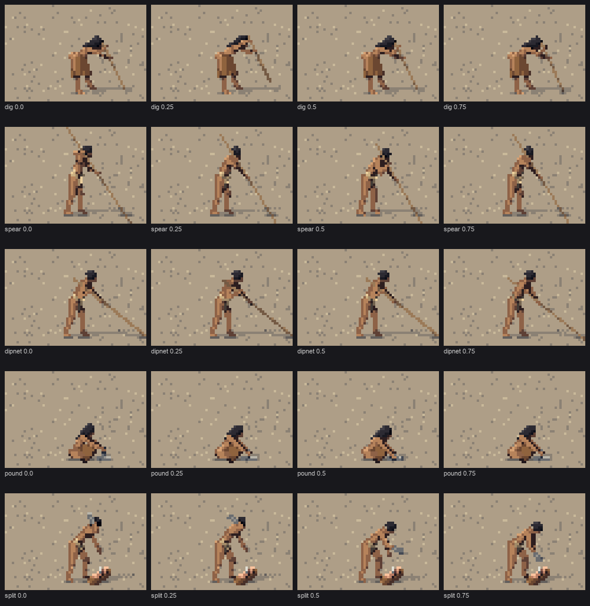

2. A body that carries weight
Back to the tutorial. Code: fig.proportions and fig.fk (skeleton, spine, IK, grounding), poses.py (21 activities), person.build (variation, elders), stage3.py (the Muybridge board), in ~/work/pixelart-studies/elements/people/src/.
The brief said activity and weight must "read instantly". At 12 px there's no face and no hand, so an activity is read from three things only:
- the angle of the trunk;
- where the weight sits over the feet;
- the line of the tool.
This page is about getting those three right, and checking them against photographs rather than my memory of how people stand.
Measure the bodies you're drawing
The naturalist had one measured source: Eells (1877) weighed and measured eleven Twana men, clothing deducted. They averaged 165 cm and 64 kg, against the sim's default 175 cm and 70 kg. (Eells' remarks on character are "prejudice, not data", as the guide says; his tape measure is data.) So:
- an adult man is 1.0 unit (1.65 m) and a woman 0.94;
- a child of 7–9 is 0.62 with a head of about 1/5 of height; a toddler is 0.48, head 1/4.5;
- each person varies ±4% in stature and −6%/+10% in build, from their seed.
P = dict(thigh=0.24, shin=0.23, ankle=0.035, torso=0.30, neck=0.035, head=0.145,
sh=0.115, hip=0.08, uarm=0.17, farm=0.15, foot=0.075, stature=1.0,
r_torso=0.068, r_thigh=0.06, r_shin=0.044, r_uarm=0.035, r_farm=0.03, girth=1.0)
if sex == 'f':
P.update(stature=0.94, sh=0.095, hip=0.085, r_uarm=0.032, r_farm=0.027)
if age == 'child': # about 7-9 years: 4.5-5 heads
P.update(stature=0.62, head=0.16, thigh=0.215, shin=0.2, torso=0.28, ...)
My first torsos were far too thin. The Muybridge plates showed it, and the Curtis fisherman confirmed it: a chest is 22–25 cm deep, not the 16 I'd started with. The torso is now built from:
- a chest bar between the shoulders;
- a waist in two halves, which makes it narrower in profile than from the front;
- a pelvis bar;
- a buttock capsule behind and, for women, a small chest in front, which give the profile its S-curve.

nb074. The Clayoquot fisherman (Curtis), the same quantized to 40 px, and my spear figure before the fix. His body is a heavy rounded mass over the pole; mine was a stick. The torso capsules were deepened after this.
The skeleton: a round back
fig.fk builds joints in a body frame (forward, up, left) from angles in degrees:
- trunk
pitch; hip/kn(knee flexion);sh(arm raised forward),sab(arm out sideways),el(elbow flexion);headp;twist(shoulders about the trunk).
The one structural choice that mattered was a two-segment spine. A single trunk hinged at the hips makes a plank, so a bent figure reads as a bow. Bruegel's binders and Millet's gleaners bend with a round back. So the upper half of the spine curls a further 0.35 × pitch by default, and a pose can override the curl:
curl = p.get('curl', None)
if curl is None:
curl = 0.35 * max(p['pitch'], 0)
mid = pel + up * P['torso'] * 0.5
pit2 = pit + curl * D2R
up = v3(math.sin(pit2), math.cos(pit2), 0)
chest = mid + up * P['torso'] * 0.5
The head follows the upper spine a little (hp = headp + 0.55 · pit2), so a bent woman's head goes down with her shoulders instead of staying level like a periscope.

study. The copy: Bruegel's three harvesters (quantized, native) beside my engine in his poses and colours at three sizes. The round back is what made the bent woman (bottom) read.
Grounding is automatic. After the joints are placed, the lowest of heels, toes, knees (for kneeling) and pelvis (for sitting) is moved to y = 0, or a pose names a seat height (a log is 0.22). No pose ever floats or sinks, and a kneeling woman lands on her knees without a special case.
Elders are a modifier, not a separate rig: +12° pitch, 10° more curl, the head raised 6° against the stoop, knees 8° softer, and grey hair. The studio critic's round-3 note, "elders look identical to adults", is what prompted it.
Poses are keyframes over a phase
Each activity is a function of phase ∈ [0, 1) returning joint angles. Keys are interpolated cyclically with smoothstep:
def interp(keys, phase):
"""keys: list of (phase, dict). Cyclic, smoothstep between keys."""
The walk is Muybridge's four keys (contact, down, passing, up), mirrored left–right for the second half:
WALK = [
# contact: a long stride (Muybridge: heel to toe about 0.4 of stature), back heel lifting
(0.0, dict(hipL=30, knL=4, hipR=-22, knR=14, footR=24, footL=-10, shL=-20, shR=20, elL=10, elR=20,
pitch=4, bob=-0.012)),
(0.125, dict(hipL=20, knL=18, hipR=-24, knR=32, footR=40, ...)),
(0.25, dict(hipL=2, knL=8, hipR=20, knR=64, ...)),
(0.375, dict(hipL=-16, knL=4, hipR=30, knR=26, ...)),
]
def cycle(half, phase):
keys = list(half) + [(p + 0.5, mirror(d)) for p, d in half]
return interp(keys, phase)
Other activities reuse it. Carrying a loaded basket on a tumpline is the walk with shorter steps and a 20° lean from the ankles:
if a == 'carry': # tumpline basket: forward lean from the ankles, short steps, hands at the strap
p = cycle([(k, {**d, 'hipL': d['hipL'] * 0.8, 'hipR': d['hipR'] * 0.8}) for k, d in WALK], phase)
p.update(pitch=20, headp=-6, shL=14, shR=-6, elL=70, elR=20, sabL=10, sabR=8)
p['hipL'] += 14
p['hipR'] += 14

study. Sheet A: all 21 activities × four phases at 24 px.
Check the walk against Muybridge
I keyframed the first walk from memory, then built a board: six frames of a Muybridge plate of a woman walking, cut out, area-reduced to exactly 32 px of figure height, and thresholded to a silhouette. My walk at the same six phases, and its silhouette, went underneath.
c = im.crop((int(x0 + i * cw), y0, int(x0 + (i + 1) * cw) - 4, y0 + ch))
m = np.asarray(c) > np.percentile(c, 88) # she is light on a dark gridded ground
top, bot = ... # her bounding rows
k = size / (bot - top) # scale so she is exactly `size` px tall
small = c.resize((int(c.width * k), int(c.height * k)), Image.BOX)

study. Muybridge reduced; his silhouette; mine; my walk. The first version had a stride of about 0.35 of stature where his is ~0.45, no lean, and no mass. The keys above are the corrected ones.
Compare in silhouette, at the target size. Every proportion error I made showed up there and nowhere else.
Tools: put the hands on the line, then draw the line
My first props were drawn along the vector from one hand to the other. When the hands crossed between phases the vector flipped, and the spear spun.

nb031. Before: the spear and dip net point somewhere different every phase.
The fix inverts it. The pose decides where the tool is, and places both hands on its line; the tool is then drawn through the hands. That needs two-bone IK for the arms. A target is given relative to the chest, or as a joint name, or as an offset from a joint, so a seated woman can clasp her own knee:
if isinstance(ik, str): # reach for a joint: 'knL', 'knR', 'anL' ...
T = J[ik] + v3(0.0, 0.02, 0.0)
elif len(ik) == 4: # (joint, df, dy, dl): an offset from a joint
T = J[ik[0]] + v3(*ik[1:])
else:
T = chest + v3(*ik) * P.get('stature', 1.0)
u, f_ = P['uarm'], P['farm']
D = T - sh
dist = np.clip(np.linalg.norm(D), abs(u - f_) + 1e-3, u + f_ - 1e-3)
Dn = nrm(D)
a_ = (u * u - f_ * f_ + dist * dist) / (2 * dist)
h_ = math.sqrt(max(u * u - a_ * a_, 0))
pole = -up * 1.0 - tf * 0.25 + tl * sg * 0.55 # elbows bend down, back and out
pole = nrm(pole - Dn * (pole @ Dn))
J['el' + s] = sh + Dn * a_ + pole * h_
J['ha' + s] = sh + Dn * dist
A digging stick, then, is two hand targets that move together through lift, thrust and lever, and a stick drawn from above the top hand down to the ground:
if a == 'dig': # a flat back hinged at the hips, legs nearly straight, both hands high on the stick
t = interp([(0.0, dict(v=0.0)), (0.35, dict(v=1.0)), (0.55, dict(v=-0.3)), (0.8, dict(v=-0.1))], phase)['v']
return dict(pitch=54 - 6 * t, curl=6, headp=16, hipL=30, hipR=14, knL=14, knR=8, habL=6, habR=6,
ikR=(0.2, 0.02 + 0.09 * t, -0.03), ikL=(0.25, -0.13 + 0.09 * t, 0.03))
# person.build, prop 'digstick': through both hands, down to the ground in front
d = nrm(hL - hR)
top = hR - d * 0.08 * st
bot = top + d * min(top[1] / max(-d[1], 1e-3), 0.8 * st)

fig. After: dig, spear, dipnet, pound and split through four phases at 32 px.
Check tool sizes against the sources, not your eye. The spear rising far behind the fisherman looked wrong to me until I read the guide: salmon spear poles were 15–25 ft, held near the middle. The paddle is 4–5 ft with a leaf-shaped blade. The digging stick is 0.45–0.75 m, fire-hardened. The maul is a pestle-shaped stone driving an elk-antler wedge.
Poses that read as something else
Weight and gesture are also where a figure can read as the wrong thing. Two critics and I found these:
| pose | first read as | what it became |
|---|---|---|
| carry_load, a log across both shoulders | a crucifix | salmon on a carrying pole over one shoulder, after three more failures: silver bars at the hips, red legs, a red arm |
| split, an axe swung overhead | a European woodcutter | bent over the log, stone maul raised to the head, other hand on the antler wedge |
| hold_baby, the cradleboard held out | holding up a sign | held across the body in both arms, baby's head at the top |
| dig, trunk pitched 62° with the default curl | an ape | a flatter back (curl 6°), straighter legs, hands high |
| gather, both hands down | crawling | kneeling on one knee, trunk up, one hand reaching ahead |

nb115. One of the dead ends: a salmon draped over the shoulder reads as a red arm from every side. The carrying pole (nb116, in the story) worked.
Look at every activity at 16 px and ask what else it could be. At that size a figure is read as the nearest familiar silhouette, and some familiar silhouettes (a cross, a raised axe, a body on the ground) carry meanings you don't want.
Where it falls short
- Seated activities are weak below 12 px. Weave, sit, sit_eat and fire all become "someone sitting".
- The throw and squat_play poses are the least convincing of the 21.
- Every pose was designed side-on, so from the 30° iso view bent figures foreshorten into blobs more often than they should.
- No pose has the mass of Bruegel's. They are correct in gesture and slim in body.